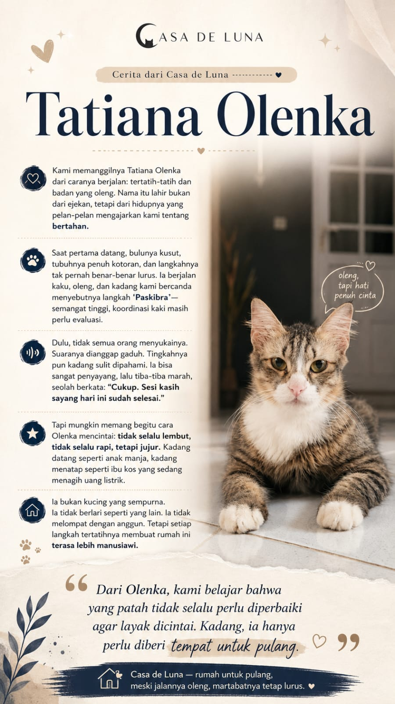
Storiesof de LunaTatiana Olenka
Kisah anabul
Tatiana Olenka
Sebuah kisah tentang nama, rumah, dan bagaimana kepedulian memberi kesempatan baru untuk pulang.
Ikuti cerita di Instagram ↗Stories of de Luna
Materi dan nuansa halaman ini mengikuti folder Stories of de Luna: hangat, jujur, personal, dan memberi ruang pada perjalanan setiap anabul.

StoriesSebuah kisah tentang nama, rumah, dan bagaimana kepedulian memberi kesempatan baru untuk pulang.
Ikuti cerita di Instagram ↗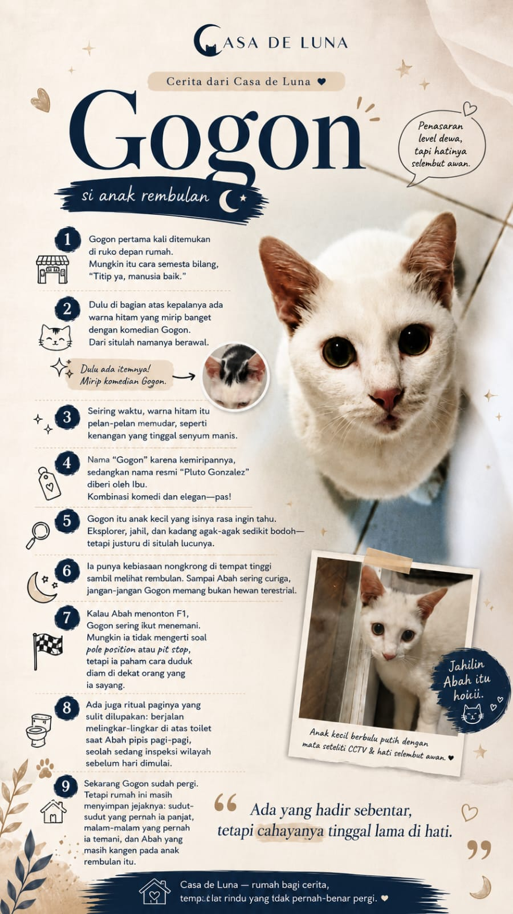
Untukmu,Ada yang hadir sebentar, tetapi cahayanya tinggal lama. Merawat sampai akhir juga merupakan bentuk cinta.
Baca lanjutan ↗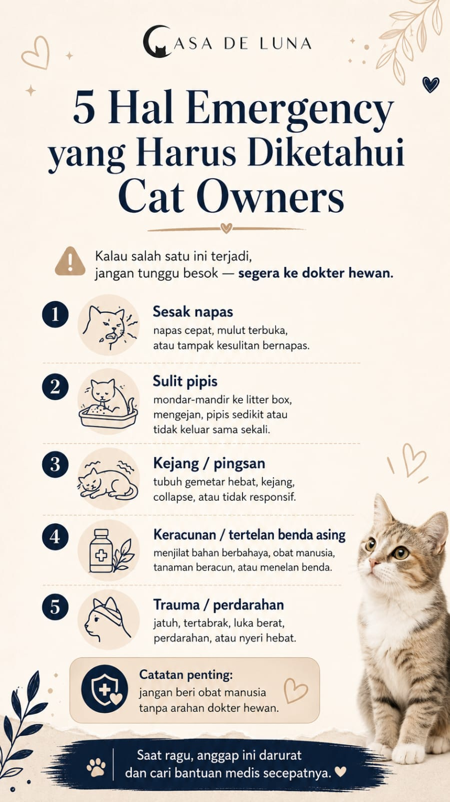
5 HalCatatan praktis untuk mengenali keadaan darurat dan menentukan kapan perlu mencari bantuan dokter hewan.
Lihat layanan Pet Care →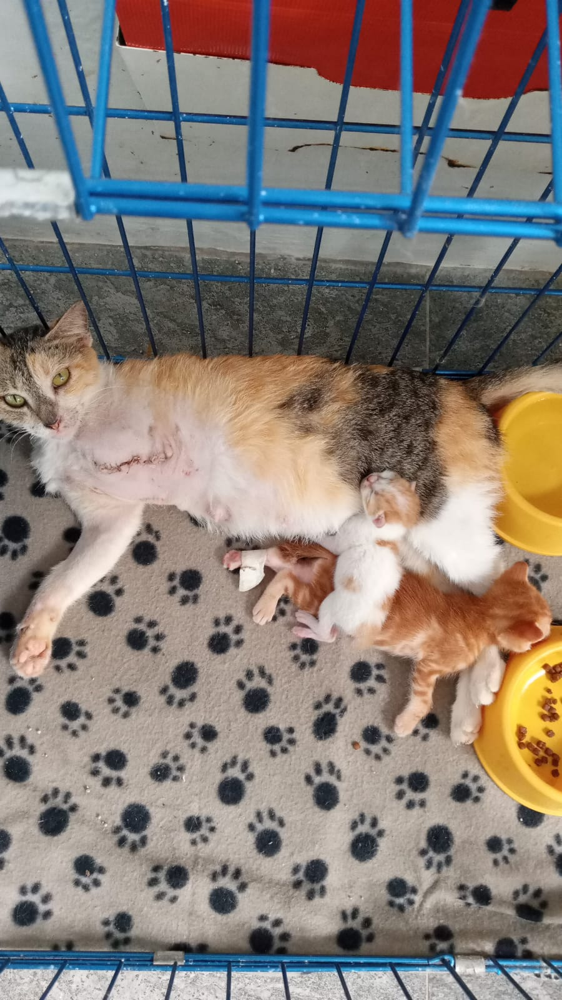
Sebuah potret sederhana dari ruang perawatan: induk kucing dan anak-anaknya, bersama dalam suasana yang aman dan hangat.
Dukung perawatan mereka →Foto dari folder Photos Anabul—momen sederhana yang membuat shelter terasa seperti rumah.
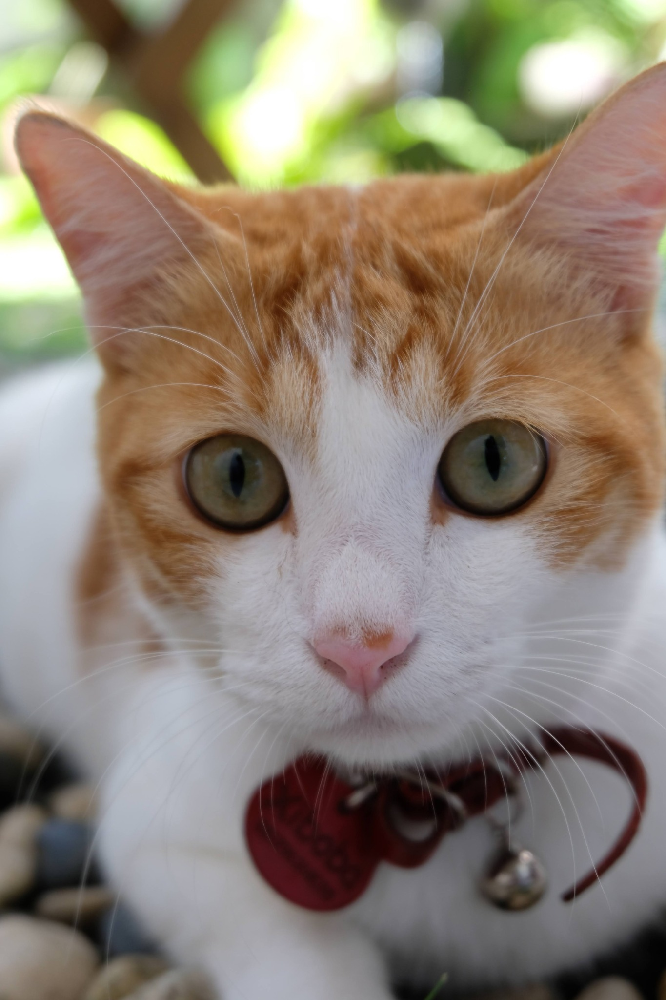
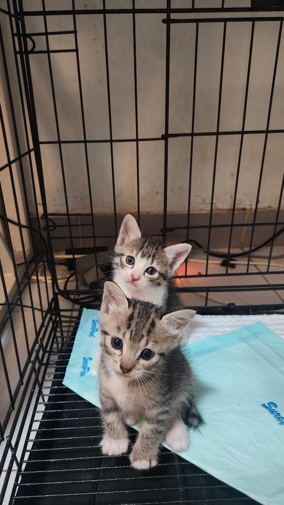
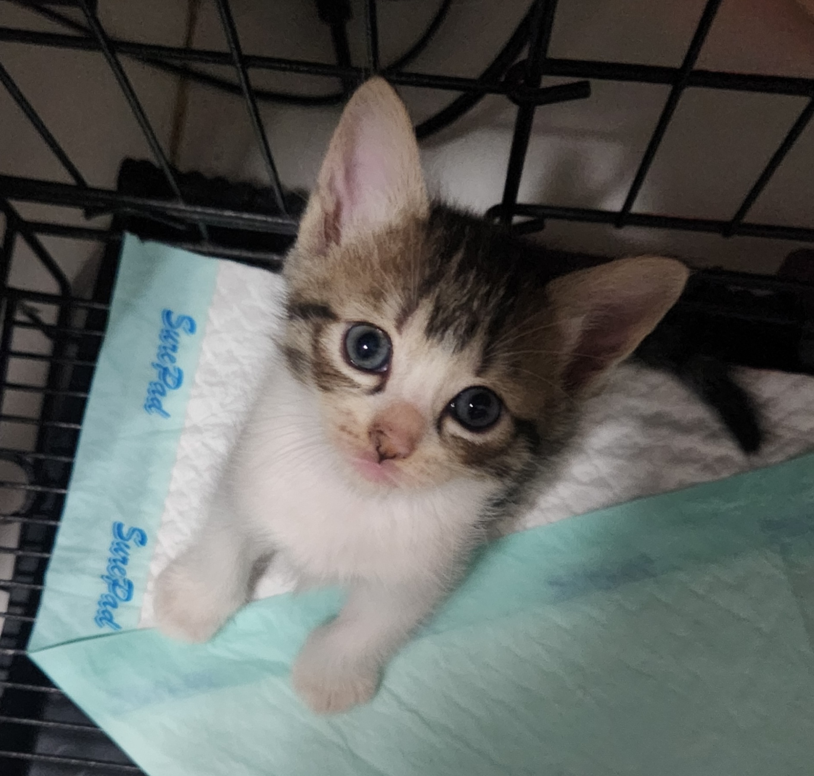
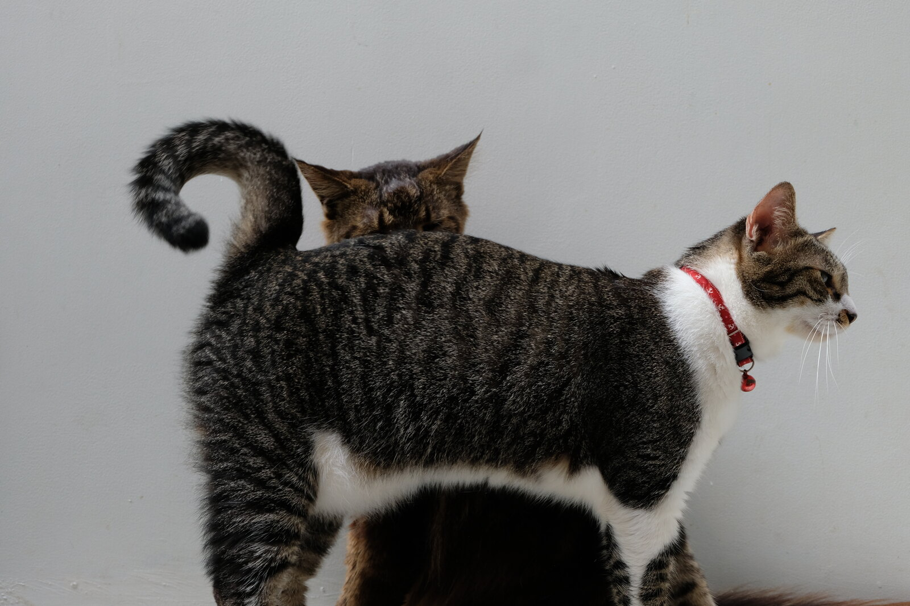
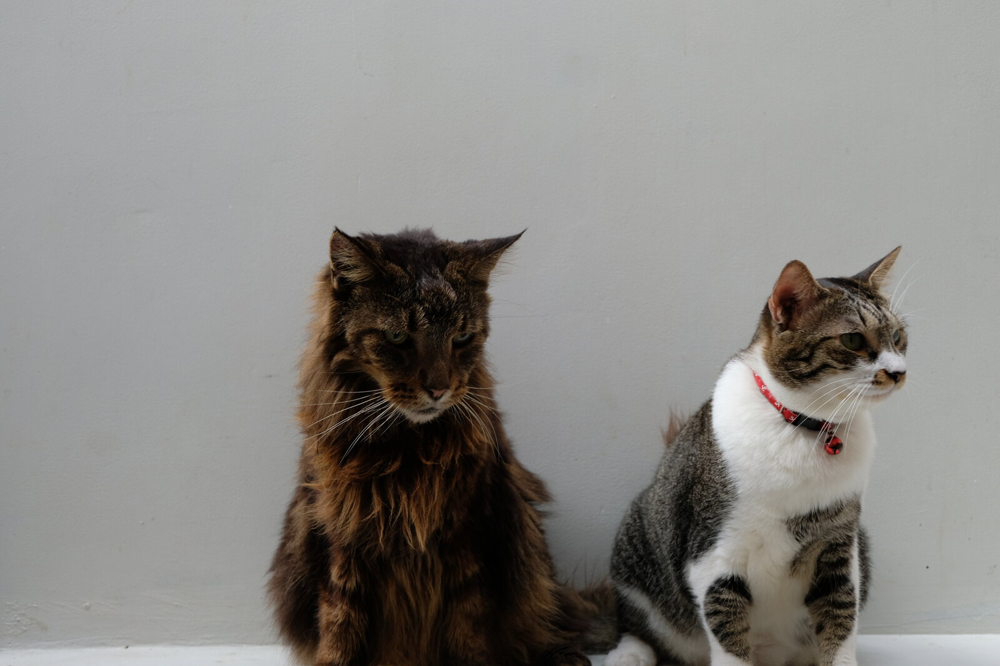
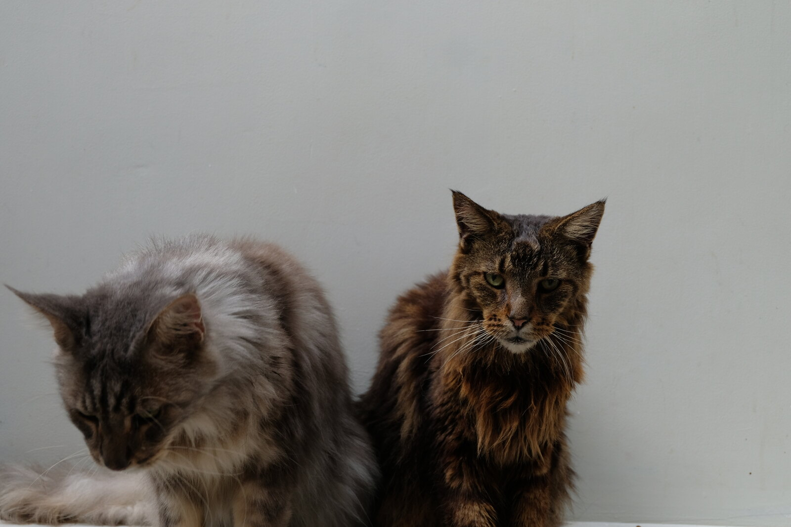
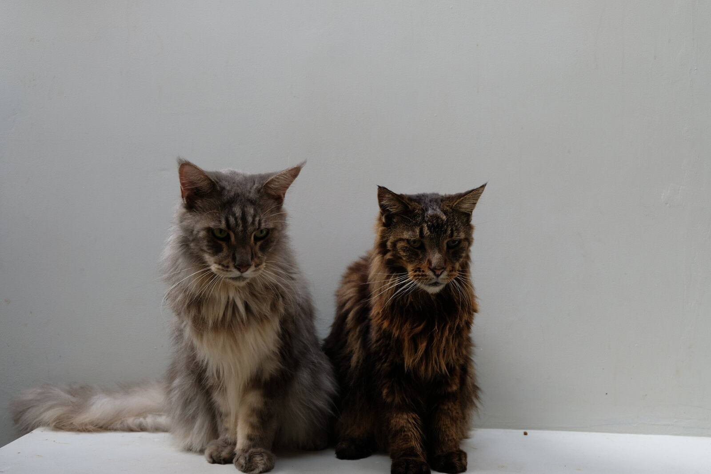
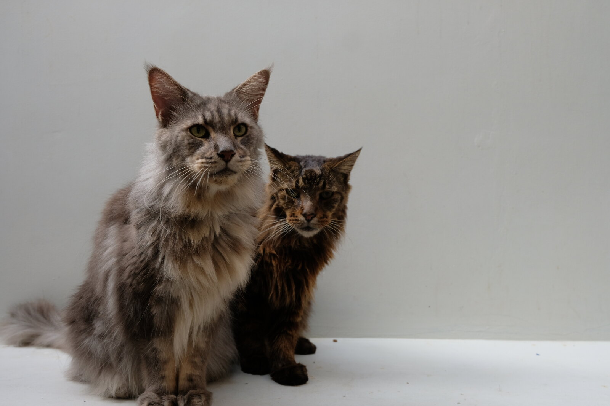
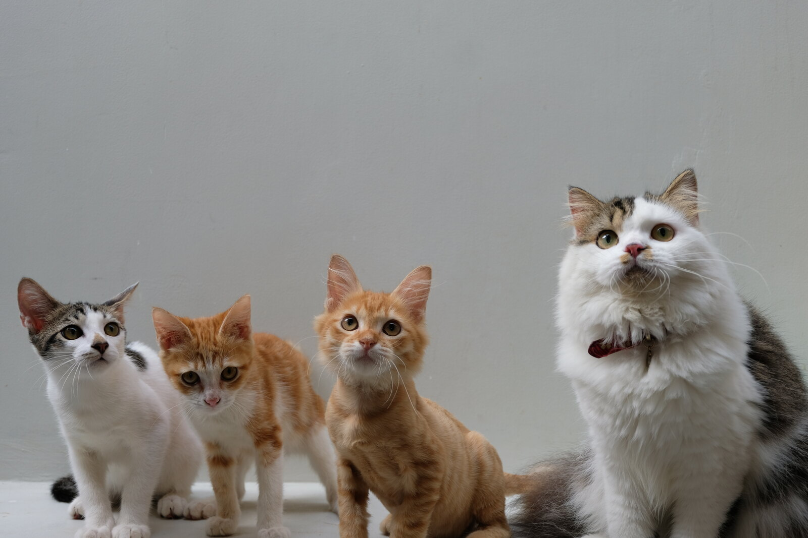
“Yang patah tidak selalu perlu diperbaiki agar layak dicintai.”
— Dari rumah kecil kami